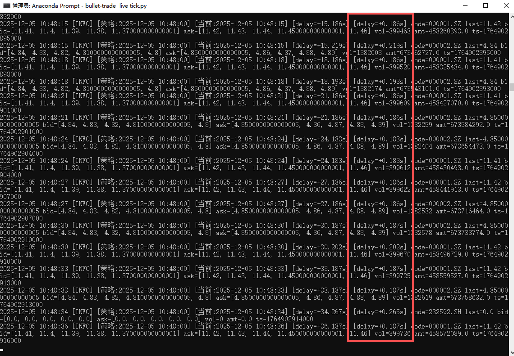

Tick 订阅与行情接收指南¶
面向实盘/远程使用者的 Tick 使用说明，覆盖订阅、接收、取消以及当前实现限制。底层实现主要有两条链路：
- LiveEngine + qmt-remote（默认）：
subscribe(...)只记录订阅清单，后台按tick_sync_interval（默认 2 秒）轮询券商的get_current_tick。对于远程场景，该调用会通过RemoteQmtBroker -> RemoteQmtConnection请求 server 的data.snapshot，并在收到后触发策略的handle_tick。 - 本地 xtdata（无 LiveEngine 或设置了 xtdata 数据源）：
subscribe(...)会直接调用xtdata.subscribe_quote/subscribe_whole_quote由 xtquant 推送，回调_on_xt_tick统一成sid/last_price/dt后传给策略的handle_tick。 - Server 端 data.subscribe：
bullet-trade server内部的TickSubscriptionManager每隔 1 秒轮询数据适配器的get_current_tick，将结果打包成事件{"symbol": "000001.SZ", "sid": "000001.XSHE", "last_price": 10.1, "dt": ...}推给远程客户端。当前 LiveEngine 的 qmt-remote 券商并不消费该推送，而是采用上面的轮询模式。
Tick 负载里有哪些字段？¶
- 始终有
sid（聚宽风格代码，例如000001.XSHE）和last_price、dt（时间字符串）。 - xtdata 推送时原始字段是
stock_code/code+lastPrice/time，框架会映射成上述键；server 推送时会额外带symbol（QMT 风格代码，如000001.SZ）。 - 本地 xtdata 订阅 会尽量保留盘口与昨收等字段：
bid1/ask1/bid1_volume/ask1_volume/last_close/open/high/low/volume/amount/limit_up/limit_down，命中即写入tick；五档以上暂未展开。 - 远程 qmt-remote 目前仍只有基础快照（不含盘口深度）。
快速开始：订阅部分标的¶
- 准备
.env.live（或通过--env-file指定），关键项：
DEFAULT_BROKER=qmt-remote、QMT_SERVER_HOST/PORT/TOKEN，必要时QMT_SERVER_ACCOUNT_KEY、QMT_SERVER_SUB_ACCOUNT、QMT_SERVER_TLS_CERT。
服务端需已通过bullet-trade server --enable-data --enable-broker启动。 - 在策略中声明订阅并实现回调：
import datetime as dt from jqdata import * def initialize(context): pass def process_initialize(context): subscribe(['000001.XSHE', '000002.XSHE','232592.XSHG','104749.SZ'], 'tick') def handle_tick(context, tick): """ 假定 tick 是 dict，形如 {code: [payload,...]} 或 {code: payload}。 只提取最常用字段并打印当前时间与 tick 时间的延迟。 """ now = dt.datetime.now() if not isinstance(tick, dict): log.info(tick) return for code, payload in tick.items(): entry = payload[0] if isinstance(payload, (list, tuple)) and payload else payload if not isinstance(entry, dict): log.info(f"code={code} tick={entry}") continue ts_raw = entry.get('time') or entry.get('datetime') delay = "" if isinstance(ts_raw, (int, float)): try: delay_val = (now - dt.datetime.fromtimestamp(ts_raw / 1000)).total_seconds() delay = f"[delay=+{delay_val:.3f}s] " except Exception: delay = "" log.info( f"{delay}code={code} last={entry.get('lastPrice')} " f"bid={entry.get('bidPrice')} ask={entry.get('askPrice')} " f"vol={entry.get('volume')} amt={entry.get('amount')} ts={ts_raw}" ) - 启动实盘：
bullet-trade live strategies/demo.py --broker qmt-remote --env-file .env.live - 运行中可随时调用
unsubscribe(['000001.XSHE'], 'tick')或unsubscribe_all()取消。
能从图上看到我们测试环境tick数据的延迟情况

轮询模式意味着订阅数量越多，对 server 的请求压力越大；请留意
tick_subscription_limit（默认 100）和tick_sync_interval。
重启 / 热更新后的订阅要点¶
- LiveEngine 会把订阅清单持久化，但券商侧不会自动恢复订阅。若第二次启动时跳过了
initialize，订阅不会自动重绑。 - 建议在
process_initialize（Live 独有）或after_code_changed中再调用一次subscribe(...)以确保重启/热更新后仍然生效；也可在initialize里保留调用以兼容回测。
全市场订阅¶
- 本地 Windows + xtquant 场景可用：
subscribe(['SH', 'SZ'], 'tick')会调用xtdata.subscribe_whole_quote，推送经_on_xt_tick转发后进入handle_tick。 - 远程 qmt-remote 暂不支持全市场订阅：server 端未实现
allow_full_market开关，RemoteQmtBroker也未对接推送订阅；需要全市场时只能在本地 xtdata 运行或自行枚举标的列表。
取消与查询¶
unsubscribe([...], 'tick')：取消部分订阅；unsubscribe_all()：全部取消。对远程模式会减少 LiveEngine 轮询列表。get_current_tick('000001.XSHE')：即时拉取一次快照（同样经 server 的data.snapshot拉取），不依赖订阅状态，可在调试时验证连通性。
已知限制与测试现状¶
- 推送链路与 LiveEngine 脱节：远程模式的订阅不会触发 server 端的 tick 推送，而是客户端每隔
tick_sync_interval主动拉取；标的较多时延迟与带宽占用上升。 - 未实现 Throttler/压缩/批量：server 端对订阅数仅做上限校验，没有批量聚合或压缩，极端高频场景需要谨慎。
- 全市场订阅仅限本地 xtdata；
allow_full_market配置未在 server 侧生效。 - 自动补价/停牌检测仅在下单时发生，tick 本身不含这些标志。
- 测试覆盖：存在 LiveEngine 订阅限额与快照读取的单测（见
tests/core/test_live_engine.py），但没有覆盖远程 server 的 tick 订阅/推送、重连、全市场等场景；建议实盘前手工验证。